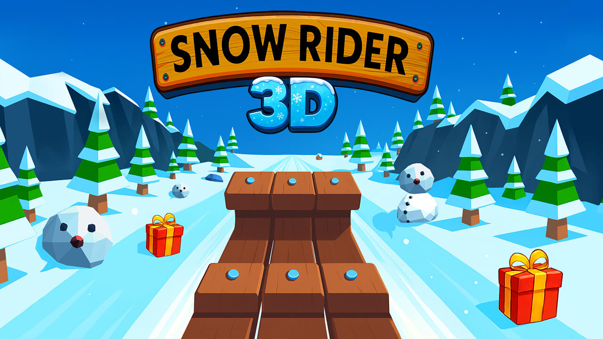

Snow Rider 3D Unblocked
Play the sledding game online. No download needed.

Game provided by Miniplay.
Its player may show ads and a privacy prompt.
Choose Play to load the game. First load can take a moment.
How to play
Use ← / → or A / D to steer. Press ↑ or W to jump. Avoid obstacles, collect gifts and use the game’s menu to choose a sled.
Controls & loading helpWhich game is this?
This page loads the existing Snow Rider 3D game through Miniplay. This website is an independent game page, not the game’s developer.
Can I play on mobile?
The publisher lists mobile landscape support. Turn your device sideways and use controls shown inside the game. Device and browser support may vary.
Why might the game not load?
The game loads from an external publisher. Network filters, browser privacy settings or service outages may affect it. Try Reload game or Open game. Access depends on your network’s rules.